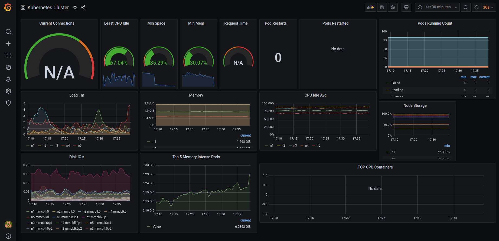
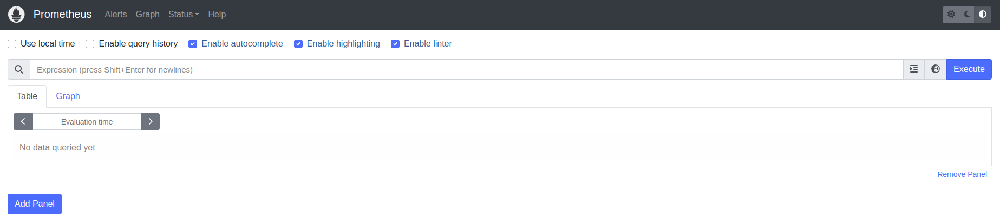
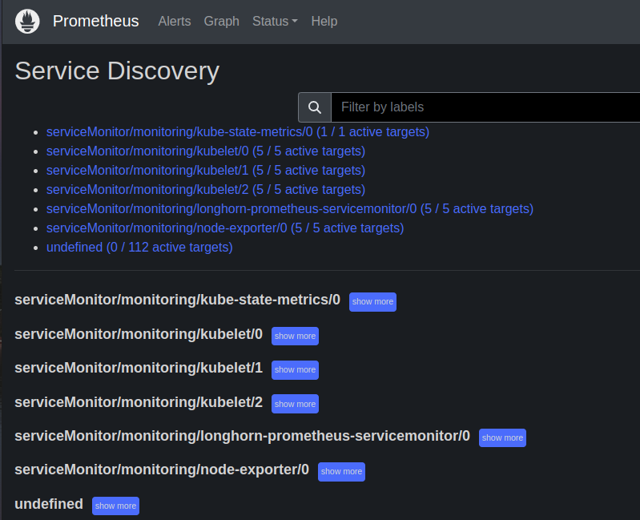
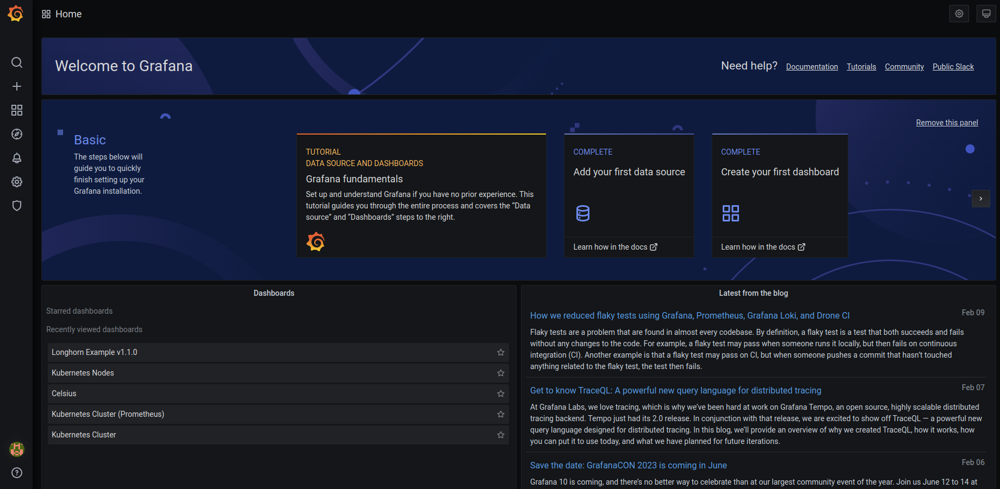
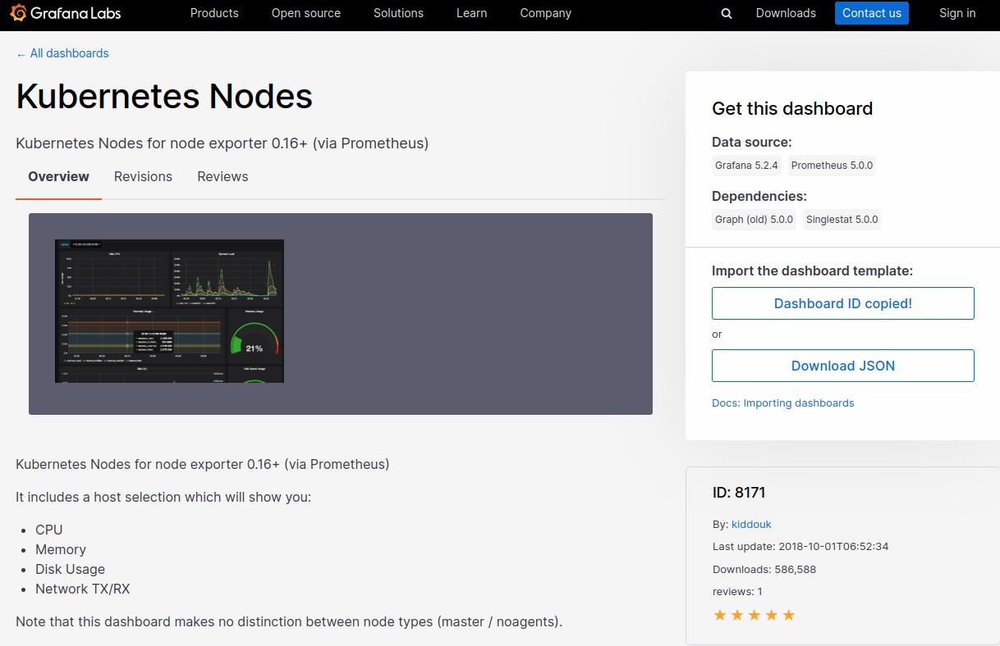
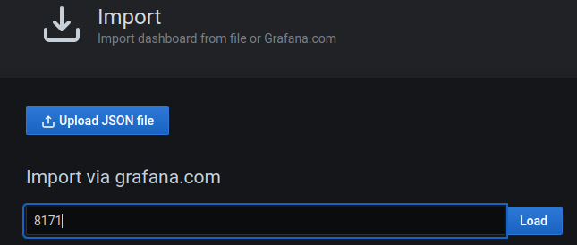
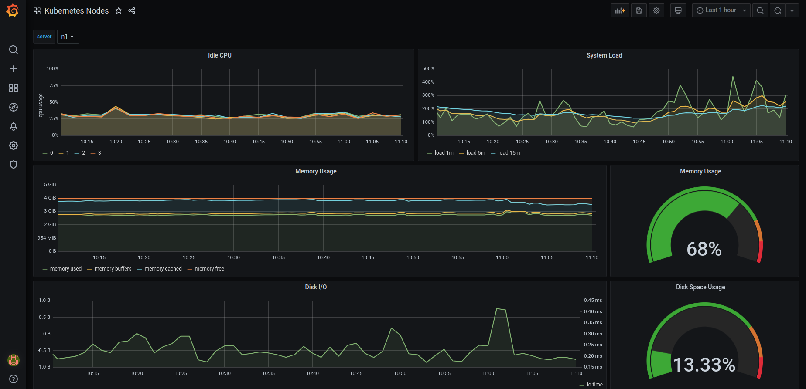
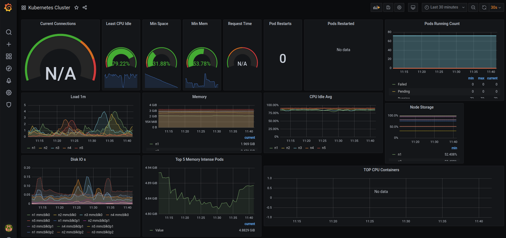
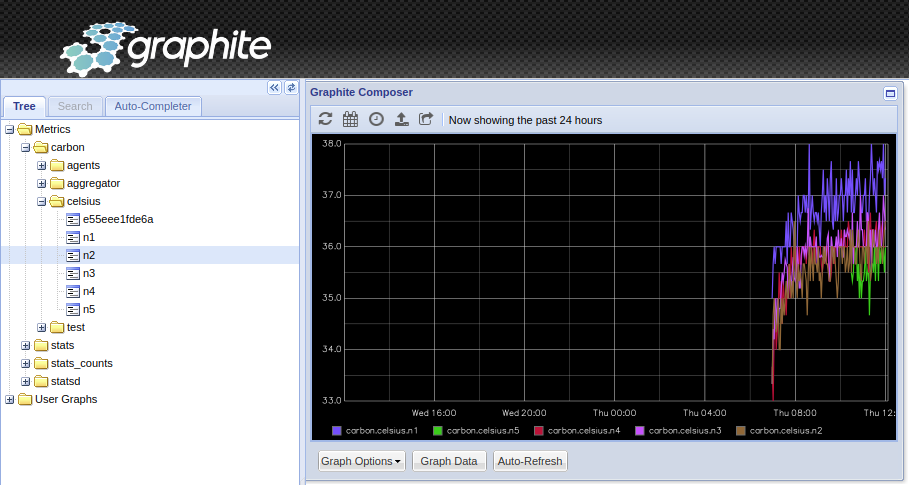
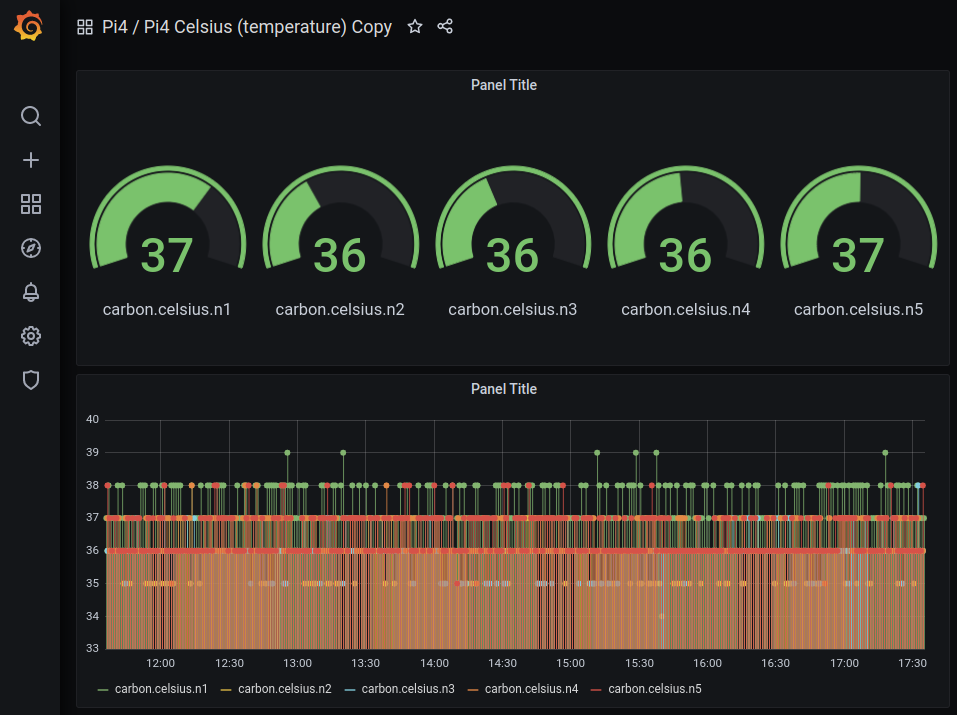

PI4 Stories¶
Raspberry Pi 4 cluster Series - Setup monitoring¶
This story is mostly based on K3s Monitoring. Basically, we need to install Prometheus and many other components to be able to feed Grafana. Our goal is to get something like:

To start we have to download the pi4-monitoring GitHub project:
$ git clone https://github.com/gdha/pi4-monitoring.git
$ cd pi4-monitoring
$ ls
grafana images kubelet kube-state-metrics LICENSE longhorn-servicemonitor.yaml monitoring-namespace.yaml node-exporter prometheus prometheus-operator readme.md traefik
Prometheus Operator¶
One instance that will help us provision Prometheus, and some of its components. It extends the Kubernetes API, so that when we create some YAML deployments it will look as if we’re telling Kubernetes to deploy something, but it’s actually telling Prometheus Operator to do it for us. Official documentation: Prometheus Operator
We executed the following steps to install the Prometheus Operator [1] - is optional as it is already present and prepared under the prometheus-operator directory:
$ cd prometheus-operator
$ wget https://raw.githubusercontent.com/prometheus-operator/prometheus-operator/master/bundle.yaml
Followed by editing with sed the bundle.yaml file to replace the default namespace by monitoring (which is the namespace in where we want to built our monitoring tools for kubernetes).
Then we first create the namespace and apply the bundle.yaml file as seen below:
$ grep 'namespace: default' bundle.yaml
namespace: default
namespace: default
namespace: default
namespace: default
$ sed -i 's/namespace: default/namespace: monitoring/g' bundle.yaml
$ grep 'namespace: ' bundle.yaml
a `namespace: <object namespace>` matcher.'
namespace: monitoring
namespace: monitoring
namespace: monitoring
namespace: monitoring
To create the prometheus-operator we first need to create the namespace monitoring:
$ kubectl create -f ../monitoring-namespace.yaml
namespace/monitoring created
Then, we can create the prometheus-operator as follow:
$ cd ~/projects/pi4-monitoring/prometheus-operator
$ kubectl apply --server-side -f bundle.yaml
customresourcedefinition.apiextensions.k8s.io/alertmanagerconfigs.monitoring.coreos.com serverside-applied
customresourcedefinition.apiextensions.k8s.io/alertmanagers.monitoring.coreos.com serverside-applied
customresourcedefinition.apiextensions.k8s.io/podmonitors.monitoring.coreos.com serverside-applied
customresourcedefinition.apiextensions.k8s.io/probes.monitoring.coreos.com serverside-applied
customresourcedefinition.apiextensions.k8s.io/prometheuses.monitoring.coreos.com serverside-applied
customresourcedefinition.apiextensions.k8s.io/prometheusrules.monitoring.coreos.com serverside-applied
customresourcedefinition.apiextensions.k8s.io/servicemonitors.monitoring.coreos.com serverside-applied
customresourcedefinition.apiextensions.k8s.io/thanosrulers.monitoring.coreos.com serverside-applied
clusterrolebinding.rbac.authorization.k8s.io/prometheus-operator serverside-applied
clusterrole.rbac.authorization.k8s.io/prometheus-operator serverside-applied
deployment.apps/prometheus-operator serverside-applied
serviceaccount/prometheus-operator serverside-applied
service/prometheus-operator serverside-applied
$ kubectl get pods -n monitoring
NAME READY STATUS RESTARTS AGE
prometheus-operator-6d56dc87f4-tg5qh 1/1 Running 0 25s
Next step is to prepare the service monitors.
Install Service Monitors¶
Prometheus Node Exporter¶
We will install the Prometheus Node Exporter [2] service which is a daemonset to collect metrics from individual cluster nodes, and many other details. The installation is quite simple.
$ cd ~/projects/pi4-monitoring
$ kubectl apply -f node-exporter/
clusterrolebinding.rbac.authorization.k8s.io/node-exporter created
clusterrole.rbac.authorization.k8s.io/node-exporter created
daemonset.apps/node-exporter created
serviceaccount/node-exporter created
servicemonitor.monitoring.coreos.com/node-exporter created
service/node-exporter created
This will create all permissions, and deploy the pod with the application Node Exporter, that will read metrics from Linux.
After doing so, you should see node-exporter-xxxx pods in the monitoring namespace; I have 5 nodes, so it’s there 5 times.
$ kubectl get pods -n monitoring -o wide
NAME READY STATUS RESTARTS AGE IP NODE NOMINATED NODE READINESS GATES
prometheus-operator-6d56dc87f4-tg5qh 1/1 Running 0 10m 10.42.2.197 n2 <none> <none>
node-exporter-flgs7 2/2 Running 0 61s 192.168.0.204 n4 <none> <none>
node-exporter-r4wfz 2/2 Running 0 61s 192.168.0.202 n2 <none> <none>
node-exporter-jblkk 2/2 Running 0 61s 192.168.0.201 n1 <none> <none>
node-exporter-fhkw6 2/2 Running 0 61s 192.168.0.203 n3 <none> <none>
node-exporter-jwt8k 2/2 Running 0 61s 192.168.0.205 n5 <none> <none>
Kube State Metrics¶
This is a simple service that listens to the Kubernetes API, and generates metrics about the state of the objects.
Link to official GitHub: kube-state-metrics.
When we download the GitHub project pi4-monitoring then cd ~/projects/pi4monitoring and execute:
$ kubectl apply -f kube-state-metrics/
$ kubectl get pods -n monitoring | grep kube-state
kube-state-metrics-6f8578cffd-cmks6 1/1 Running 19 (93m ago) 45d
Kubelet¶
Kubelet, in case you did not know, is an essential part of Kubernetes’ control plane, and is also something that exposes Prometheus metrics by default in the port 10255. And as before:
$ cd ~/projects/pi4monitoring
$ kubectl apply -f kubelet-servicemonitor.yaml
servicemonitor.monitoring.coreos.com/kubelet created
Traefik¶
I do not use Traefik much in my setup, but it is there, and it also exposes Prometheus-ready data, so why not...
$ cd ~/projects/pi4monitoring
$ kubectl apply -f traefik-servicemonitor.yaml
servicemonitor.monitoring.coreos.com/traefik created
$ kubectl get servicemonitors.monitoring.coreos.com -n monitoring
NAME AGE
node-exporter 45d
kube-state-metrics 45d
kubelet 45d
traefik 45d
Install Prometheus¶
Now, we are going to deploy a single instance of Prometheus. Normally, you would/should deploy multiple instances spread throughout the cluster. For example, one instance dedicated to monitor just Kubernetes API, the next dedicated to monitor nodes, and so on... As with many things in the Kubernetes world, there is no specific way things should look 🙂, so to save resources, we will deploy just one.
To deploy a single instance of prometheus perform the following actions:
$ cd ~/projects/pi4-monitoring
$ kubectl apply -f prometheus/
clusterrole.rbac.authorization.k8s.io/prometheus created
clusterrolebinding.rbac.authorization.k8s.io/prometheus created
serviceaccount/prometheus created
service/prometheus-external created
service/prometheus created
prometheus.monitoring.coreos.com/prometheus-persistant created
When you inside the prometheus.yaml file you will the Service Monitors we created:
serviceMonitorSelector:
matchExpressions:
- key: name
operator: In
values:
- longhorn-prometheus-servicemonitor
- kube-state-metrics
- node-exporter
- kubelet
- traefik
Furthermore, as storage we will be using the longhorn volumes as you can see:
storage:
volumeClaimTemplate:
spec:
accessModes:
- ReadWriteOnce
storageClassName: longhorn
resources:
requests:
storage: 20Gi
The longhorn volume created is:
The prometheus-service-ext.yaml file defines the loadbalancer piece. See:
$ kubectl get svc -n monitoring | grep external
prometheus-external LoadBalancer 10.43.53.220 192.168.0.232 9090:31862/TCP 45d
When you browse to URL: http://192.168.0.232:9090/ you will get to see :

You can reverse the background colors with the icons on the right corner (I prefer black as background). When you select the "Service Discovery" under the status tab you will see the following screen proofing we receive information about our kubernetes cluster:

Longhorn service monitor¶
Our storage provisioner Longhorn, that we deployed somewhere near the start of this whole K3s Kubernetes cluster setup, also natively provides data for Prometheus.
Create in the folder monitoring, that we will put most of our configs in, the file [longhorn-servicemonitor.yaml](https://github.com/gdha/pi4-monitoring/blob/master/longhorn-servicemonitor.yaml).
As you can see, we are not talking to Kubernetes API (we are... but...), but to apiVersion: monitoring.coreos.com/v1, so we are basically telling Prometheus Operator to create something for us. In this case it’s kind: ServiceMonitor.
This should be clear, metadata: -> namespace: monitoring, we are telling it to deploy into our monitoring namespace.
The rest under spec: is basically telling what app the Service Monitor should "bind to". It’s looking for app: longhorn-manager in namespace longhorn-system and port: manager. This port could be a port number, but it also can have a name, so in this case it’s named manager.
This is the longhorn-manager we are targeting.
$ kubectl get daemonset -n longhorn-system
NAME DESIRED CURRENT READY UP-TO-DATE AVAILABLE NODE SELECTOR AGE
engine-image-ei-fc06c6fb 5 5 5 5 5 <none> 48d
longhorn-manager 5 5 5 5 5 <none> 48d
longhorn-csi-plugin 5 5 5 5 5 <none> 48d
To describea the daemonset of longhorn-manager execute:
$ kubectl describe daemonset longhorn-manager -n longhorn-system | grep Port
Port: <none>
Host Port: <none>
Port: 9500/TCP
Host Port: 0/TCP
Alright, now we can move on the grafana.
Install grafana¶
Our grafana pod will alos use a longhorn device as defined under file:
cat grafana-pvc.yaml
apiVersion: v1
kind: PersistentVolumeClaim
metadata:
name: longhorn-grafana-pvc
namespace: monitoring
spec:
accessModes:
- ReadWriteOnce
storageClassName: longhorn
resources:
requests:
storage: 10Gi
To install the pod just run:
$ cd ~/projects/pi4-monitoring
$ kubectl apply -f grafana/
deployment.apps/grafana created
persistentvolumeclaim/longhorn-grafana-pvc created
service/grafana created
serviceaccount/grafana created
$ kubectl get endpoints -n monitoring
NAME ENDPOINTS AGE
prometheus-operator 10.42.2.225:8080 5d16h
kube-state-metrics 10.42.2.220:8081,10.42.2.220:8080 5d16h
prometheus-operated 10.42.2.233:9090 5d16h
prometheus 10.42.2.233:9090 5d16h
prometheus-external 10.42.2.233:9090 5d16h
node-exporter 192.168.0.201:9100,192.168.0.202:9100,192.168.0.203:9100 + 2 more... 5d16h
grafana 10.42.1.21:3000 2m44s
$ kubectl get svc -n monitoring
NAME TYPE CLUSTER-IP EXTERNAL-IP PORT(S) AGE
prometheus-operator ClusterIP None <none> 8080/TCP 63d
node-exporter ClusterIP None <none> 9100/TCP 62d
kube-state-metrics ClusterIP None <none> 8080/TCP,8081/TCP 62d
prometheus-external LoadBalancer 10.43.53.220 192.168.0.232 9090:31862/TCP 62d
prometheus ClusterIP 10.43.78.140 <none> 9090/TCP 62d
prometheus-operated ClusterIP None <none> 9090/TCP 62d
grafana LoadBalancer 10.43.108.229 192.168.0.233 3000:32251/TCP 62d
Open a browser and use url http://192.168.0.233:3000/ and login with the default admin account with first time password admin.

On the left pane we can import grafana graphs with "+" -> create -> import
From GrafanaLabs we can import some examples:
- Kubernetes Nodes from GrafanaLabs - copy the ID into your clipboard:

And, paste the ID into:

and, perform the import in your grafana window. You will see the results in an instance:

- Another good example is Kubernetes Cluster from GrafanaLabs to import into your grafana dashboard.

- Even better is to create your own dashboard, in our case the already existing graphite celsius graphs:

Try it out as it is not that complicated as an exercise and you will be proud of your first designed dashboard:
